Data Workbench moves records in and out in bulk. Import checks every row and shows what will and will not go in before anything is saved. Export gives you a CSV. Update changes records you exported earlier.
Do this to load many records at once, for example a customer list. The screens below use Accounts.
1
Click Bring data in
Open Data Workbench from the sidebar. The start screen asks What do you want to do? and offers three tiles: Bring data in, Take data out and Fix data in bulk. A tile sets the task and moves you to the object list.
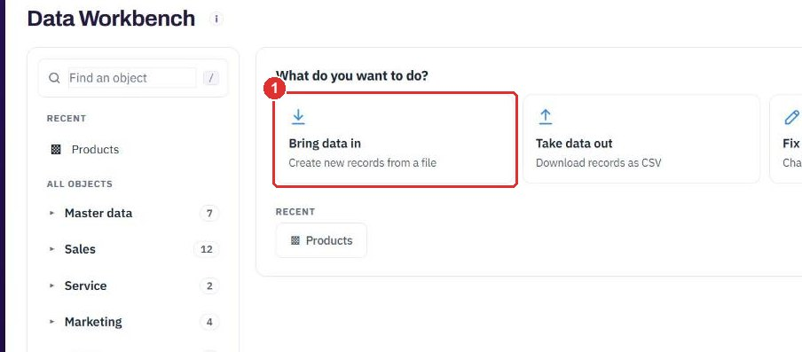
Pick a task.
2
Click Find an object
Type part of a name, for example accounts. The list narrows as you type. Press / anywhere on the page to jump to this box. Recent lists the objects you used last.
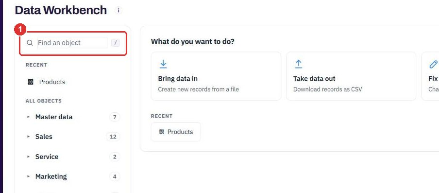
Search the list.
3
Click what to import
The list is in groups: Master data, Sales, Service, Marketing, Workforce and People. Click a group to open it. The number is how many objects it holds. Lines sit under their parent. Only the objects your workspace has switched on are listed. Click Accounts.
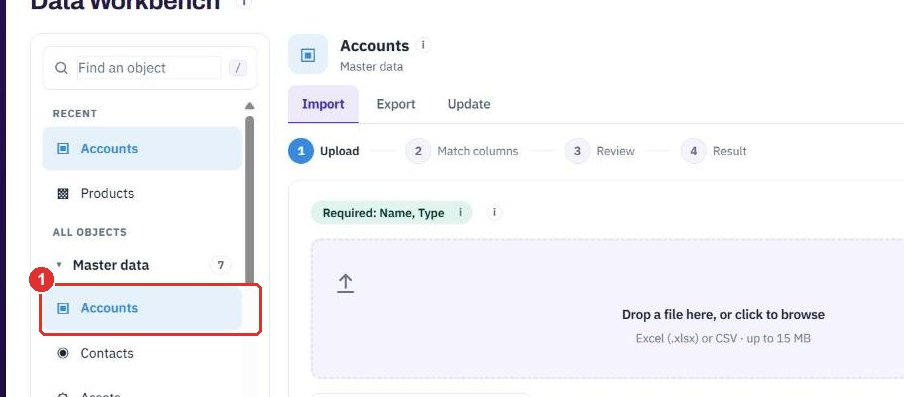
Pick the kind of record.
4
Click the Import tab
The object's name and group are at the top. Its three tabs are Import, Export and Update. A tab that does not apply to this object is grey and its "i" says why. The page address keeps the object and the tab, so you can share it.
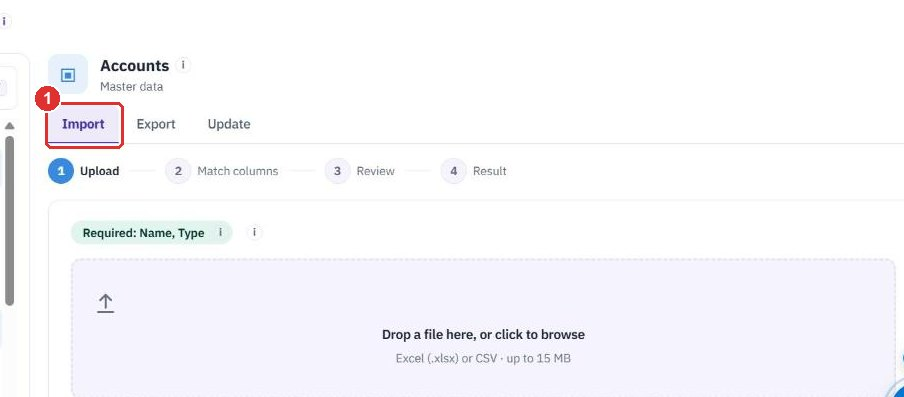
Import, Export, Update.
5
Read Required
A chip lists the required columns, here Name and Type. Its "i" says everything else is optional.
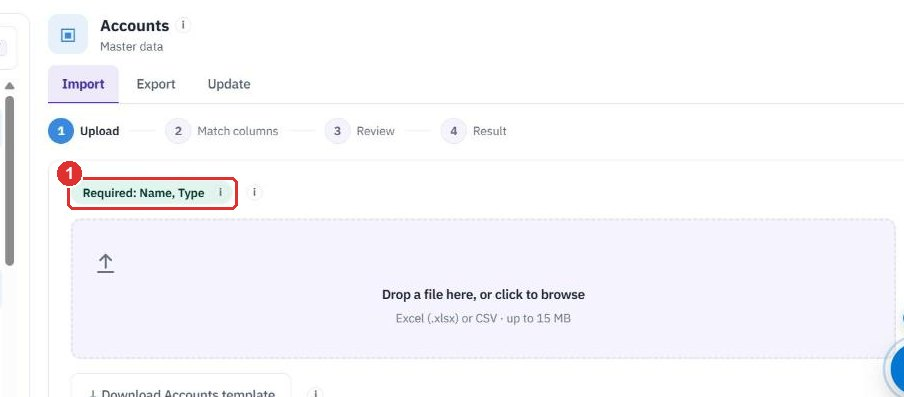
Required columns.
6
Upload your file
Drop an Excel (.xlsx) or CSV file on the dashed box, or click it to browse. The limit is 15 MB. Your own column names are fine.
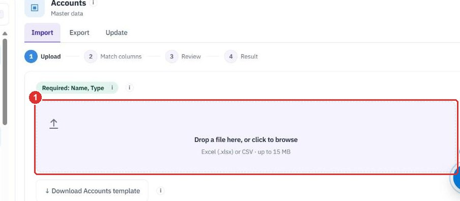
Add your file.
7
Download the template
↓ Download Accounts template sits under the box. It gives you a spreadsheet with every column and example rows. Replace the examples with your data.
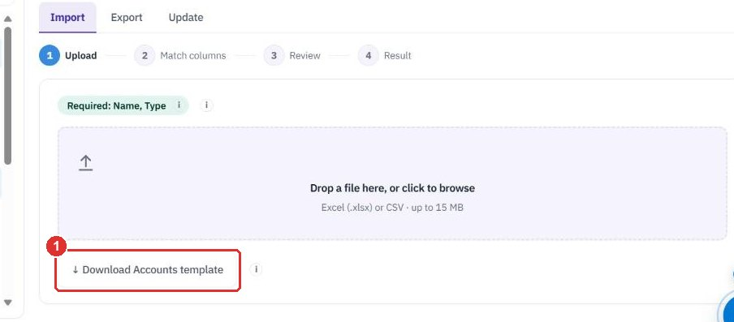
Start from the template.
8
Check Match columns
Step 2 shows each column of your file with its first value. A chip such as 3 columns matched says how many were matched on their own.
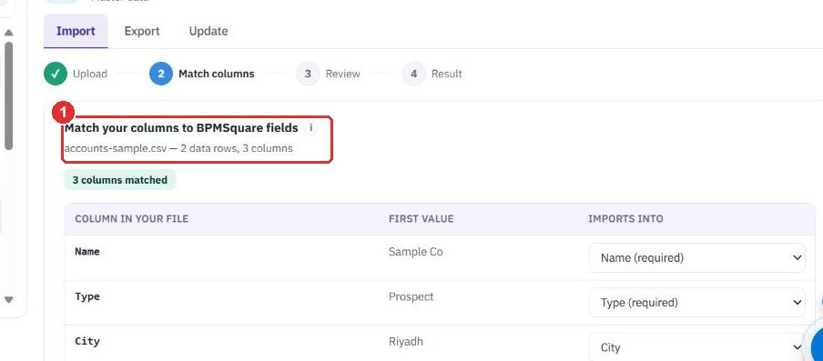
Step 2 of 4.
9
Change a match
In IMPORTS INTO, choose which field each column goes to. A column set to don't import is left out.
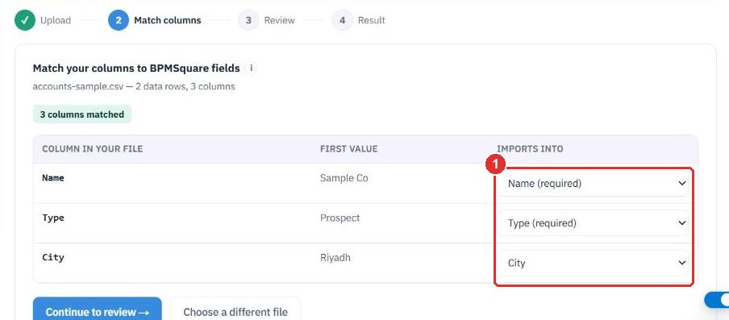
Match each column.
10
Click Continue to review →
Nothing is saved yet. Choose a different file goes back to step 1.
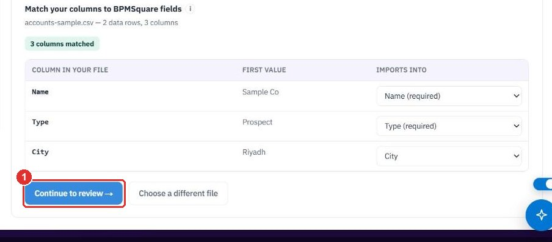
On to the review.
11
Read the review
Step 3 is Review before importing. Its "i" says rows with problems are left out and everything else is imported. The chips show how many rows are ready and how many have problems. Show only problems hides the good rows.
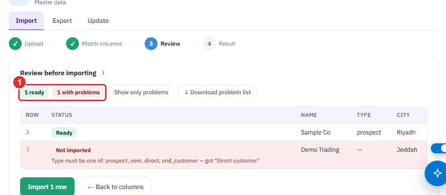
Ready and problems.
12
Read what is wrong
A row that cannot go in shows Not imported and the reason in red, for example which values a field accepts. ↓ Download problem list gives you those rows to fix.
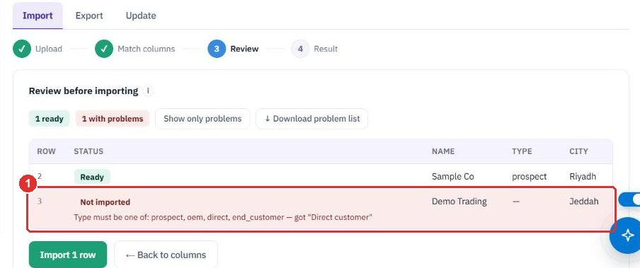
Why a row is left out.
13
Click Import
Import 1 row saves only the rows marked Ready. ← Back to columns returns to step 2. Step 4, Result, then shows what was saved. This guide did not import.
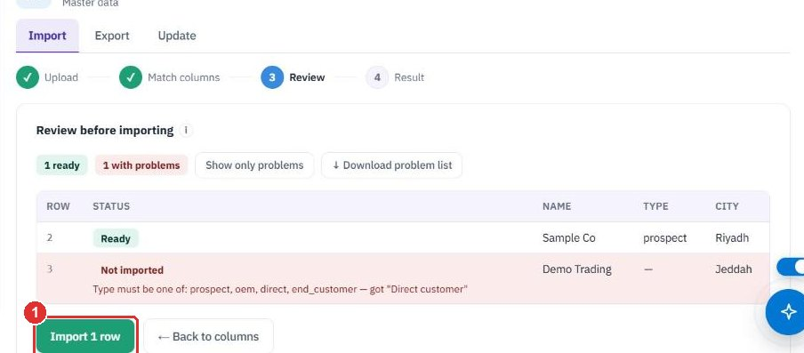
Save the good rows.
Export records to CSV
Do this to take records out as a spreadsheet, or to get the file you need for an update.
1
Click Take data out, or the Export tab
From the start screen, click Take data out and choose the object. With an object already open, click Export next to Import. Here it is Accounts.
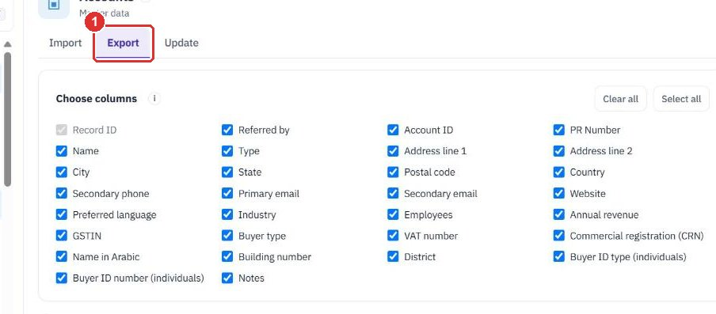
Open Export.
2
Choose the columns
Under Choose columns, untick the columns you do not want. Record ID is always included. It is what lets you upload the file again under Update.
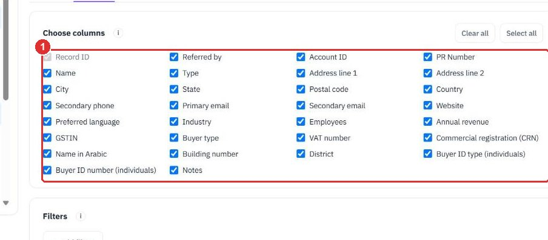
Pick columns.
3
Click Clear all or Select all
Two buttons sit at the right of the heading. Clear all unticks every column, so you can tick just the few you want. Select all ticks them all again. Each is grey when it would change nothing.
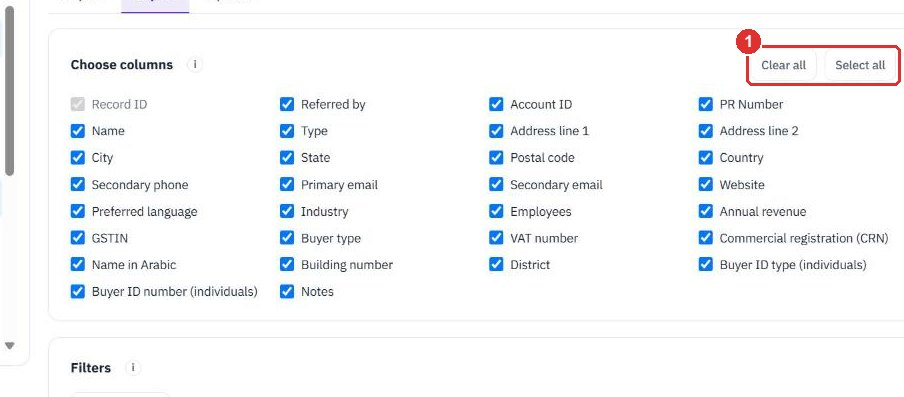
Clear all, Select all.
4
Click + Add filter
Under Filters, click + Add filter to export only matching rows. Leave it empty to export everything.
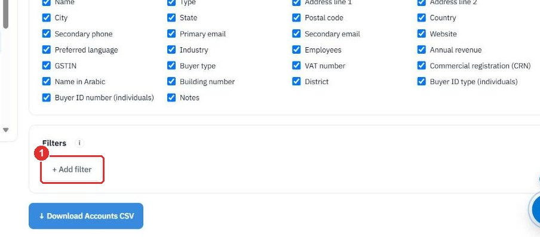
Limit the rows.
5
Click Download CSV
Click ↓ Download Accounts CSV to get the file. This guide did not download one.
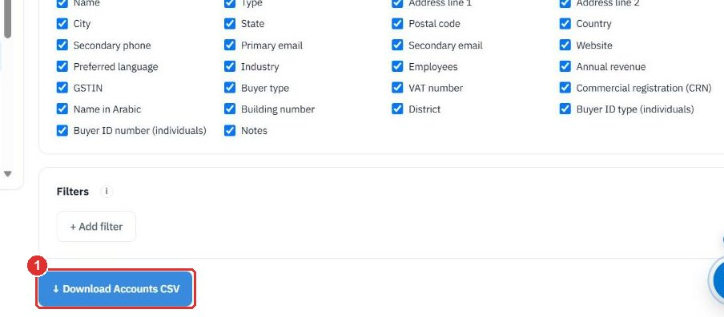
Get the file.
Update existing records
Do this to change many records you already have, for example fix a column for every account.
1
Click the Update tab
Open the object, here Accounts, then click Update. The same four steps follow: Upload, Match columns, Review and Result.
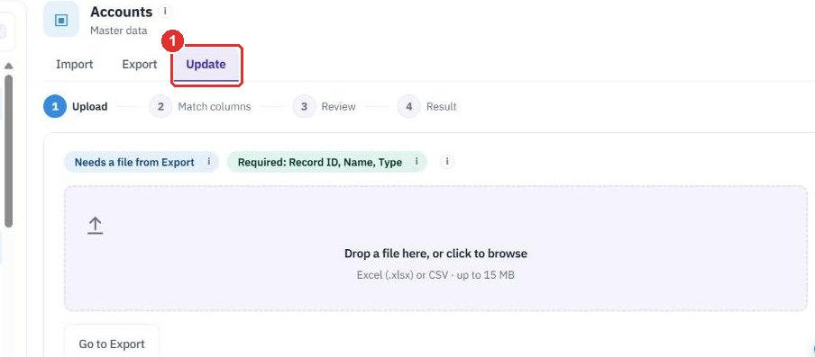
Open Update.
2
Read the two chips
Needs a file from Export says Update matches rows by Record ID, so the file must come from an export. Required lists the columns the file needs, here Record ID, Name and Type. Everything you do not match is left as it is.
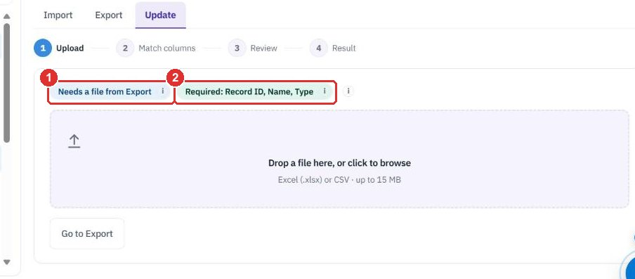
Record ID is required.
3
Click Go to Export
It takes you to Export. Download a CSV, change the values you want, then come back here.
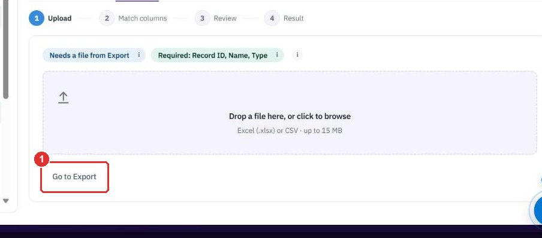
Get the file to edit.
4
Upload the edited file
Drop the edited CSV on the dashed box. The match and review steps work as in Import.
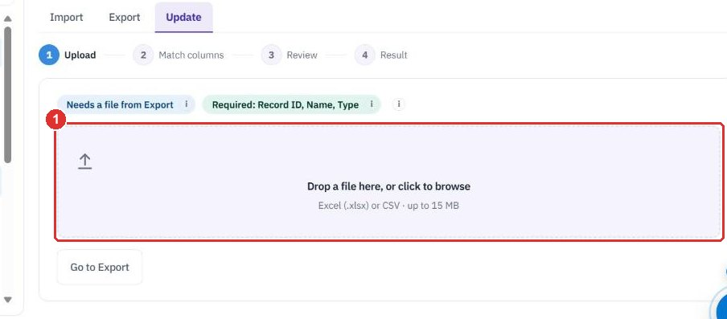
Upload the edited file.
See it on your own data.
Twenty minutes on a live workspace, with your files and your team.